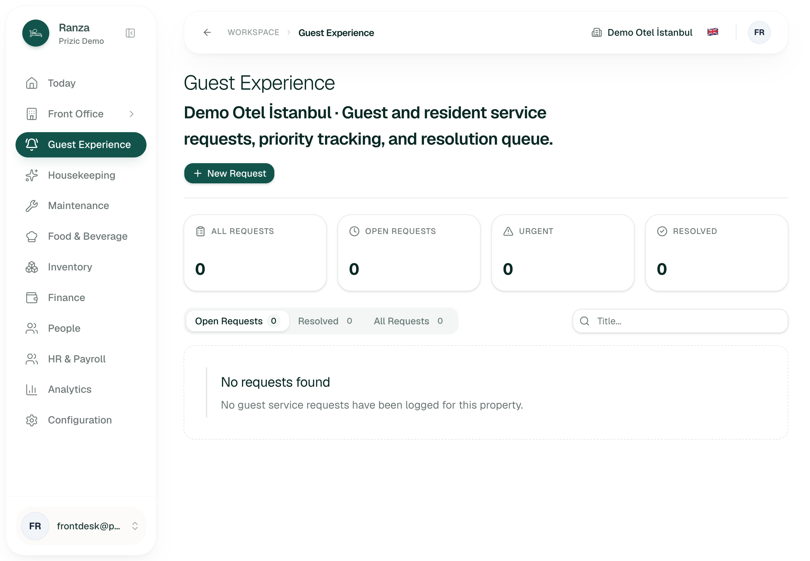
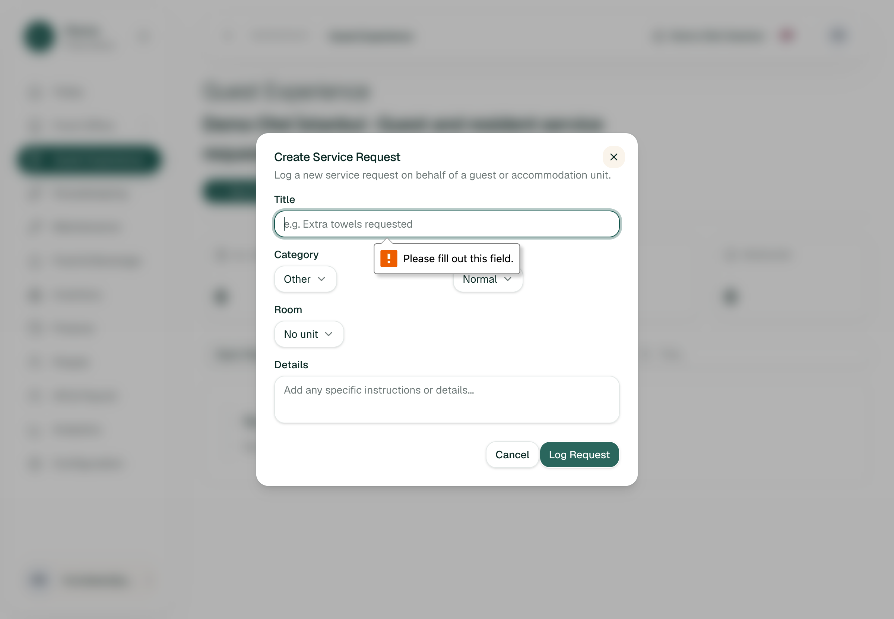
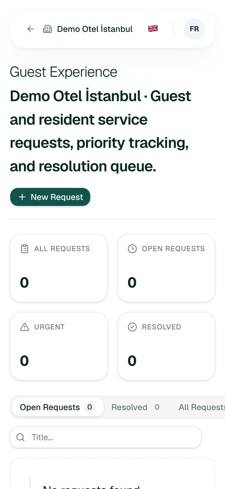
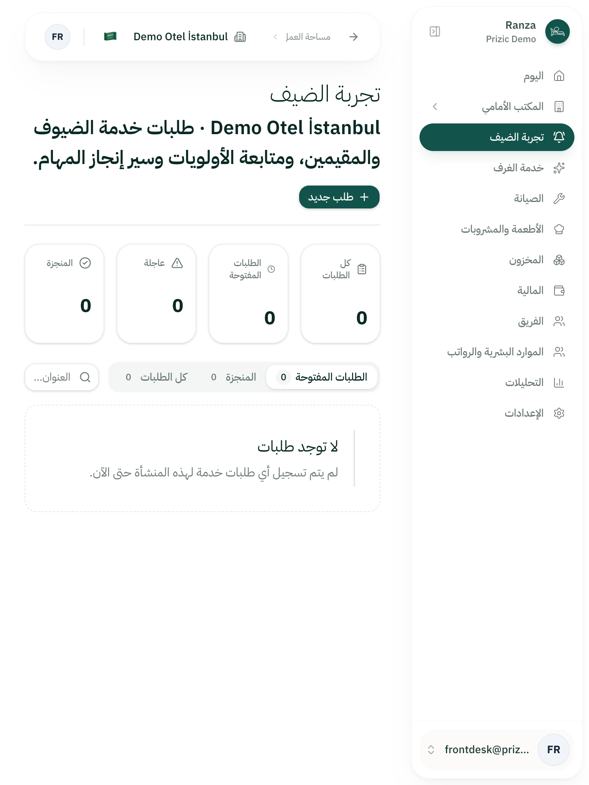
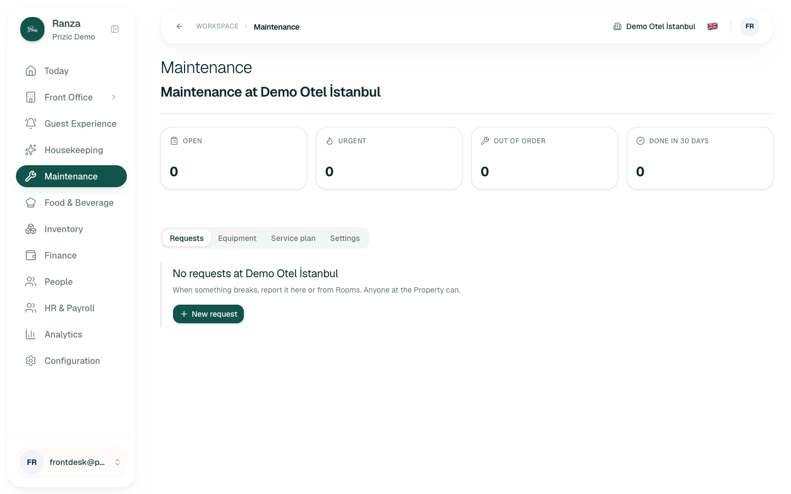

Verified: the Property has
zero guest service requests (all four counters read 0 for
Front Desk, Housekeeping and Manager). I am not allowed to create one, so
I never saw a populated table, a row action, a resolve/cancel dialog, or
the 50-request case. Everything about rows, ageing, sorting, row actions
and what a closed request looks like is
inferred from requests-table.tsx,
request-actions.tsx, server/guest-services.ts,
the module packages/ranza/guest-services and migration
20260916009900_guest_service_requests. Where a finding is
inferred I say so in the table. These are code-reading findings and I
could not reproduce any of them in the browser.
| ID | Severity | Where (route, role, data) | What happened | What I expected | Suggested fix | Effort | Evidence / reproduced | Basis |
|---|---|---|---|---|---|---|---|---|
| GX-01 | blocks work | /en/guest-experience, Front Desk & Manager, any data |
No way to assign a request to a person or department. There is no
Assignee column and no assign control. The server action
assignServiceRequest and the data field
assignedToName exist, and the message keys
assignee / unassigned exist, but nothing
renders or calls them (grep: no consumer outside
server/guest-services.ts). Use case
use-case.mmd and edge case GX-S1-13 (approved) both say
staff can assign.
|
See who owns each request; pick a person (or department) from the row; filter "unassigned". | Assignee column plus assign select in the row; "Unassigned" and "Mine" filters, as Maintenance has. Show a name, not an email (module returns the email as the name). | M | 02 (create dialog has no assignee either); not reproducible with data | verified (no control in dialog or page) + inferred (grep) |
| GX-02 | causes errors | Row action "Reopen" on a Cancelled request, Front Desk/Manager |
Reopen always sends in_progress. The database trigger
rejects that for cancelled rows ("a cancelled request can only be
reopened to new"), and the check
(status='cancelled') = (cancel_reason is not null) also
fails because the UI does not clear the reason. The server action
catches the error and returns "refused", which the UI ignores. So
Reopen on a cancelled request does nothing and says nothing. Also
states.mmd says cancelled reopens to New.
|
Request returns to New, cancel reason cleared, and I see it move to Open. |
Send new with cancelReason: null for
cancelled; show the result.
|
S | Not reproduced (no data, cannot persist) |
inferred (request-actions.tsx
handleReopen, migration lines 86-87, 205-207)
|
| GX-03 | causes errors | All row actions (Start working, Resolve, Cancel, Reopen), all roles |
Results are never read:
await updateServiceRequestStatus(...) is called and its
{status} thrown away; the Resolve and Cancel dialogs
close afterwards regardless of the outcome. There is no toast, success
or error message anywhere on the page. A refusal (no permission,
database rule, network) is indistinguishable from success until the
list refreshes. Also the Cancel button enables for 1 or 2 characters
but the database requires 3-200, so a short reason silently fails.
|
A confirmation ("Request #12 resolved") or an error saying why it did not work; dialog stays open on failure with the text kept. |
Use the returned outcome; show toast or FormError; keep
dialog open on refusal; validate the 3-character minimum client side;
use useActionState as the create dialog does. Per the
global observability rule, the console.error in the server action is
the only record of failure.
|
M | Not reproduced; code read | inferred |
| GX-04 | slows me down | Open tab with many requests, Front Desk |
No age and no priority ordering. The only time shown is "Reported" as
a fixed "Oct 11, 14:05". The query sorts
status asc, createdAt desc, which is alphabetical status:
"in_progress" sorts before "new", so a brand-new request sits
below things already being worked on, and an Urgent one is
not lifted. There is no "waiting 3h" and no overdue highlight. The
only urgency signal is a badge in one of nine columns, and the Urgent
stat tile only counts (it is not a filter).
|
Open tab sorted urgent first, then oldest first, with "waiting 2h 10m" visible, amber/red after a threshold. | Sort client or server side by priority then reportedAt asc; show relative age; make the Urgent tile click-filter. | S-M | Not reproduced |
inferred (module.ts orderBy;
requests-table.tsx)
|
| GX-05 | causes errors | /en/guest-experience, Housekeeping role |
Housekeeping sees the same page as Front Desk, including "New
Request", with no explanation of what they may do. Shipped
Housekeeping role may create but not manage requests (migration lines
106-120), yet the row actions (Start working, Resolve, Cancel) are
drawn for every role with no permission check, so for Housekeeping
they would be buttons that fail silently (see GX-03). Maintenance, by
contrast, shows a "read only" notice (board.mayManage).
The queue also shows every category to every role, with no "my
department" filter.
|
Housekeeping sees requests for their category first, and buttons they cannot use are hidden or explained. |
Pass mayManage to the table; hide or disable actions with
a reason; add category filter and default it by role.
|
M | Page seen as Housekeeping (same zero-data layout, "New Request" present); buttons not seen | verified (same page, New Request shown) + inferred (actions) |
| GX-06 | slows me down | 375 px width, Front Desk | The filter tab strip (Open / Resolved / All) is wider than the screen: the page scrolls sideways to 424 px and "All Requests" is cut off. The data table has nine columns (#, title, category, priority, room, guest, status, reported, actions) with no card/stacked layout, so with data it will need sideways scrolling too (not seen). | Everything within 375 px; a request readable as a card. | Let tabs scroll or shrink; card layout under 640 px. | S (tabs), M (cards) | 03-frontdesk-375.png. Tab overflow reproduced Y (measured scrollWidth 424 vs 375) | tabs verified; table inferred |
| GX-07 | slows me down | Create dialog, Front Desk |
The request cannot be tied to a guest or stay. The form has Title,
Category, Priority, Room (101, 102, 201, bare numbers, no occupant),
Details. The server action reads guestId from the form
but no field posts it, so the Guest column will be "-" for every
request logged here. The front desk picks a room and cannot see who is
in it.
|
Pick a room and see "Room 102, in house: guest name", with the request linked to that stay so it shows on the guest. | Prefill guest/stay from the in-house stay of the chosen room. | M | 02-create-dialog-empty-submit.png (fields); room list seen in the open select | verified (fields) + inferred (Guest column always empty) |
| GX-08 | causes errors | Create dialog failure paths |
When the server refuses (permission, database), the dialog shows
FormError text built as "{status} - {cancel}", which
reads "Status - Cancel" in English. When the server answers "invalid"
(title too long, bad id), nothing is shown at all. Browser validation
does show (I saw "Please fill out this field." and "Please lengthen
this text to 3 characters or more"), but those are the browser's own
English sentences and ignore the page locale.
|
A sentence in the page language: "You do not have permission to log requests" / "Title must be 3-200 characters". | Add message keys for refused and invalid; show them. | S | 02-create-dialog-empty-submit.png (native message). Refused text not triggered (needs a valid submit) | native validation verified; refused/invalid copy inferred |
| GX-09 | causes errors | Cancel dialog (row action), Front Desk |
The cancel-request dialog has two buttons both labelled "Cancel": the
outlined one dismisses the dialog and the red one cancels the guest's
request (t("cancel") used for both). The destructive
action has no name that says what it cancels and nothing says what the
guest is told.
|
"Keep request" and "Cancel request". |
Separate keys: keepRequest / cancelRequest.
Same for the row button.
|
S |
Not reproduced; strings read in messages.ts (cancel: "Cancel")
|
inferred |
| GX-10 | polish | Header and search, all locales | (a) The sub-heading is a long sentence rendered as a bold h2 ("Demo Otel İstanbul · Guest and resident service requests, priority tracking, and resolution queue."), four lines at 375 px. (b) The search box placeholder is "Title..." but search also matches number, room and guest. (c) Turkish: page title is "Konuk deneyimi" while the body says "Misafir"; the same word is two different words on one screen. (d) The empty message "No guest service requests have been logged for this property" also shows on the Open tab when only resolved requests exist and when a search matches nothing, which is untrue in both cases. | Short header; placeholder "Search number, room, guest or title"; one Turkish term; distinct empty states ("Nothing open" vs "No match"). | Copy changes. | S | 01-frontdesk-open-tab.png, 03-frontdesk-375.png (a, b); Turkish text read from page. (d) not seen | (a)(b)(c) verified; (d) inferred |
| GX-11 | polish | Stat tiles and tabs | The "Resolved" tile and "Resolved" tab count Cancelled requests as well (code: anything not new/in progress). The "Urgent" tile counts only open urgent ones but its label does not say "open". There is no pagination or limit: all requests for the Property are loaded and filtered in the browser, so a year of history will make every visit heavier, unlike Housekeeping which paginates ("Page 1 of 1, per page 10"). | "Closed" for resolved+cancelled, or a separate Cancelled count; "Urgent open"; paging. | Rename or split; server-side status filter and paging. | M | Housekeeping text read; code read | inferred |
| GX-12 | slows me down | Today page and side navigation, Front Desk | The Guest Experience link in the side navigation has no open-count badge, and nothing on the Today page references guest requests (no import of the module). A front desk agent has to open the page to learn whether a guest is waiting. | A count on the nav item or a tile on Today for open and urgent requests. | Reuse the counts the page already computes. | M | Navigation snapshot as Front Desk (plain link); grep of Today feature | verified (nav) + inferred (Today) |
Not reproduced twice: nothing here was reproduced on populated data, because the staging Property has none and I may not create any. The 375 px overflow and the native validation messages were each seen once and measured, and are stable layout facts.





Pass/fail written before attempting. Times are approximate wall-clock for what I actually did; I did not time jobs I could not complete.
| # | Job | Pass test (written first) | Result | Seconds | Clicks |
|---|---|---|---|---|---|
| 1 | Start of shift: see what is open, how long each has waited, and what is urgent | Within 5 s, without clicking a row, I can name the oldest open request and every urgent one | Fail (cannot be met by design: no age, no urgent-first order; GX-04). Empty on staging, so seen only as zero tiles. inferred | ~10 | 0 |
| 2 | Guest calls for extra towels: log it | Under 30 s and 4 clicks, request saved with room and category | Stopped before submit, not persisted. Form is short (title, category, priority, room, details); only title is required. No guest/stay link (GX-07). No confirmation step exists to judge. | ~40 | 4 to reach a filled form |
| 3 | Hand a request to housekeeping or a named person | I can choose an owner from the row or dialog and see it afterwards | Fail. No control exists (GX-01). Category "Housekeeping" is only a label. | ~20 searching | n/a |
| 4 | Find the request for room 102 or a guest's name among many | Type a room or name and the list narrows | inferred pass: search matches number, title, room, guest (code). Placeholder misleads (GX-10). Not tried with data. | n/a | 2 |
| 5 | Resolve a request and tell the guest it is done | Resolve with a note, see it move to Resolved, and the guest is informed or I am prompted to inform them | Stopped before submit; fail on the second half. Resolution notes are stored and displayed in the table, but the guest is not told anything and the Portal has no requests view (Not built). Outcome of Resolve is not reported (GX-03). inferred | n/a | n/a |
| 6 | Under pressure: an angry guest complaint arrives, make it impossible to miss | Create as Urgent, and it is the first thing in the Open list and visible on the Today page | Fail (inferred). Priority Urgent exists and counts in a tile, but sort order does not lift it (GX-04) and Today does not show it (GX-12). | n/a | n/a |
| 7 | Error recovery: I cancelled the wrong request; bring it back | Reopen and see it in Open as New | Fail (inferred, GX-02), silently. | n/a | n/a |
| 8 | Housekeeping agent: see what is theirs and what they may do | Sees their requests, not offered actions that fail | Partial. Page opens and offers New Request (verified); actions not seen (GX-05). | ~60 incl. sign-in | 3 |
| 9 | Use it from a phone and in Turkish/Arabic | No sideways scroll at 375 px; words in the page language; Arabic mirrored | Arabic and Turkish pass on the empty page (verified); 375 px fails on the tab strip (GX-06). | ~60 | 0 |
docs/roadmap.md says "Missing:
Guest Portal submission side". The portal has only the
stay page. So there is no arrival path from the Portal
today, and I cannot say how it will look when it lands.
inferred from README, roadmap and file list.
use-case.mmd.
assignedToUserId); "assign to
housekeeping" as a team is not modelled. A person picker is the part
that is already half-built (GX-01).
updateRequest accepts those fields) but
there is no UI, and no detail view. Not listed as deferred in
edge-cases.csv.
edge-cases.csv, so GX-07 is not covered by an
approved row.
notEntitled), not an error.
verified (reach) /
inferred (entitlement state).